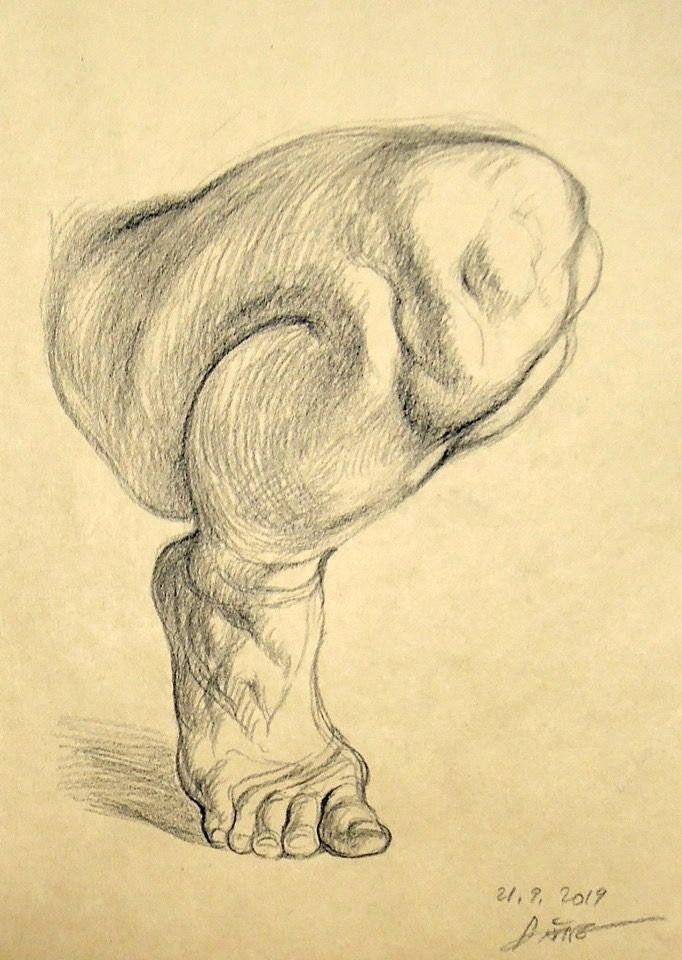
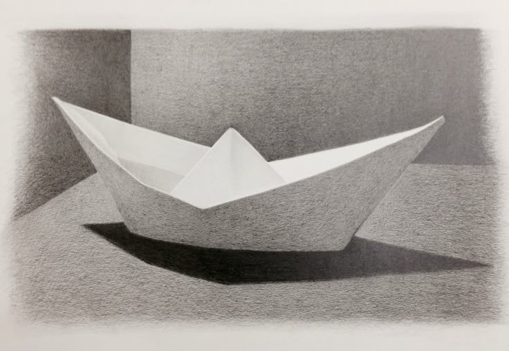
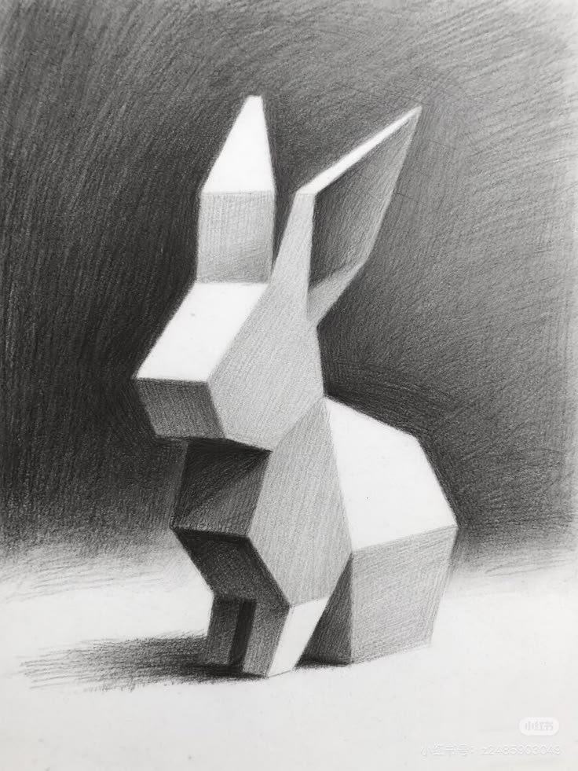
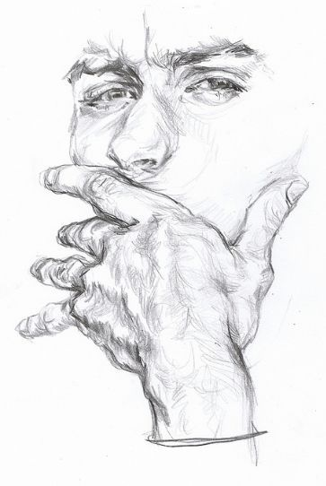
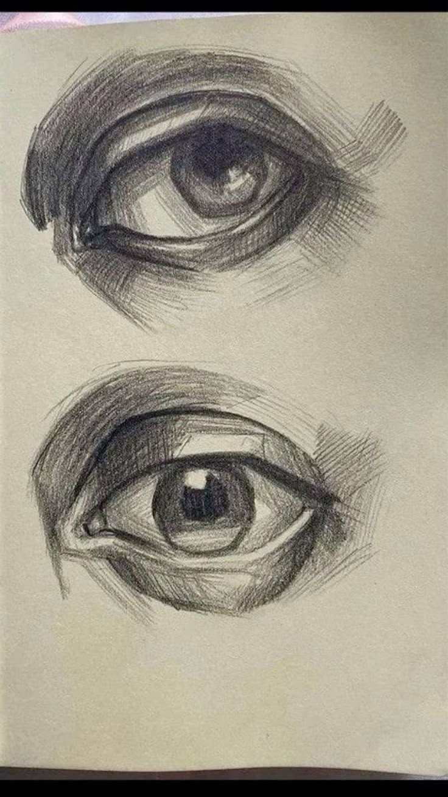
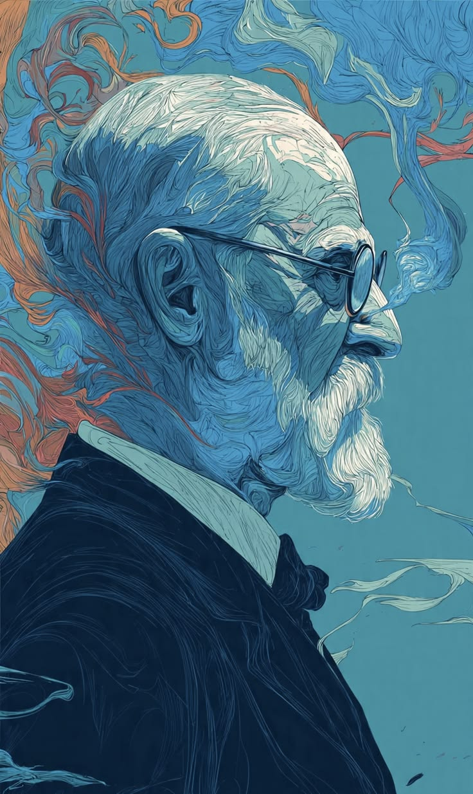

Начерк людської ноги в русі, зроблений швидкими, впевненими лініями.
Автор досліджує не форму тіла, а саме відчуття кроку — миті переходу з опори в невагомість.
Робота є частиною серії етюдів про рух, де кожна лінія фіксує не позу, а імпульс, що її породжує.
Це демонстраційне вікно — реальна оплата не здійснювалась.